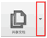

在会议中您可以通过白板更形象的表达自己想要传达的会议内容。
不同的角色，共享白板的操作权限不同，如表所示。
共享白板权限
|
角色 |
功能 |
|---|---|
|
主持人 |
|
|
主讲人 |
|
|
参与者 |
|
➢ 开始共享白板
您可以通过以下两种方式开始共享白板：
- 在工具栏中，单击
 ，选择“共享白板”，系统显示共享白板界面。
，选择“共享白板”，系统显示共享白板界面。 - 在会议信息界面的快捷入口中，单击，选择“共享白板”，系统显示共享白板界面。
开始共享白板后，其他与会者在会议信息界面可以看到主讲人共享的白板。
➢ 了解白板中的工具条
开始共享后，您可以根据自己的习惯，选择全屏模式或者非全屏模式。不同的查看模式，系统默认提供的工具条也有所不同。
- 非全屏模式下，共享白板可以操作的工具条，如图所示，功能说明如表。
非全屏模式的工具条
非全屏模式下的工具条功能说明
|
功能 |
功能说明 |
|
|---|---|---|
|
常用工具 |
白板操作 |
单击 |
|
翻页 |
单击，通过预览窗口翻页。 |
|
|
同步 |
单击，同步会议界面。
|
|
|
标注 |
选择标注工具在对应区域标注内容。常用的标注工具有“选择”、“笔”、“线框”、“文本标注”、“勾与叉”、“擦除标注”等。 |
|
|
桌面缩放 |
设置显示比例 |
单击，可选择实际大小或者适合页面的显示比例。
|
|
全屏 |
单击，切换到全屏模式。 |
|
- 全屏模式下，共享白板可以操作的工具条，如图所示，如表所示。
全屏模式的工具条
全屏模式下的工具条功能说明
|
功能 |
功能说明 |
|---|---|
|
与会者列表 |
单击 |
|
邀请用户 |
单击，邀请用户加入会议。 |
|
消息面板 |
单击 |
|
视频面板 |
单击 |
|
更多 |
单击，显示更多菜单，包含“笔记”、“录制”等功能。 |
|
数据共享 |
单击，切换数据共享的方式。 |
|
标注 |
单击，激活标注功能，选择标注工具在对应区域标注内容。常用的标注工具有“选择”、“笔”、“线框”、“文本标注”、“勾与叉”、“擦除标注”等。 |
|
本地麦克风静音 |
单击 |
|
退出全屏 |
单击，退出全屏模式。 |
- 如果您的系统已经连接电子白板设备，则可以在工具条中单击 ，进入电子白板设置向导界面。
- 您的主界面超过3秒没有操作时，工具条自动向上滑出。您可以将鼠标上移，工具条自动向下滑出。
➢ 在白板上标注
主持人、主讲人和赋予标注权限的与会者都可以在白板上进行各种标注。
- 非全屏模式下可以直接使用标注工具。
- 全屏模式下单击
 激活标注工具，如图所示。
激活标注工具，如图所示。
标注工具
标注工具从左到右依次为：“选择”、“笔”、“线框”、“文本标注”、“勾与叉”、“擦除标注”、“设置显示比例”、“退出标注”。
主讲人可以删除自己的标注，也可以删除主持人和参与者的标注；主持人和参与者只能删除自己的标注。
➢ 与其他与会者发送消息
1. 单击系统显示与会者列表面板。
2. 单击。系统显示即时消息面板。
3. 在与会者列表中，右键单击与会者名称，选择“发送即时消息”。
4. 输入消息内容。
5. 按“Enter”键，发送消息。
➢ 管理白板内容
在会议中，主讲人可以同时管理多个白板。可以根据需要创建新的白板、保存当前的白板内容或者删除不需要的白板。在工具栏中，单击，选择新建空白页、复制当前页或导入白板等操作。
- 在保存白板时，如果您没有选择保存路径，则系统将白板保存在默认的路径下。
- 导出的白板内容为*.cwb格式的文件，只支持浏览，不支持修改。